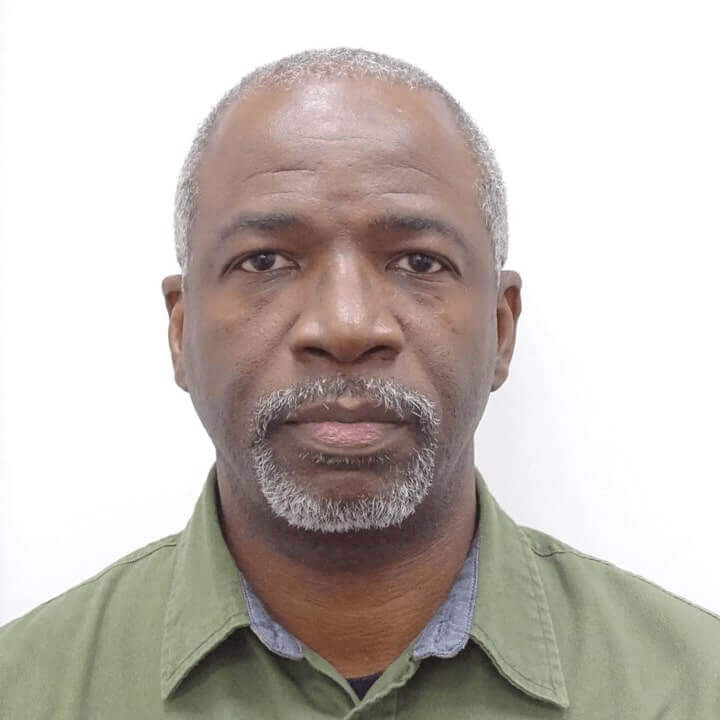
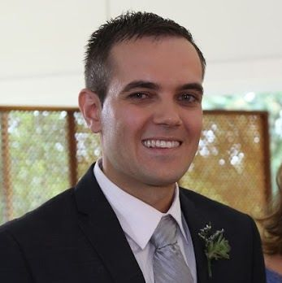

Luciano Barreto Nogueira de Moura
PresidentAndy Samuels
General SecretaryKaren Umana
Recording Secretary

Garfield Miller
TreasurerCanaan Phiri
Vice President for AfricaClaudia Ferguson
Vice President for the Caribbean
